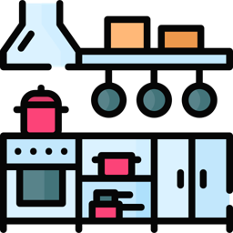
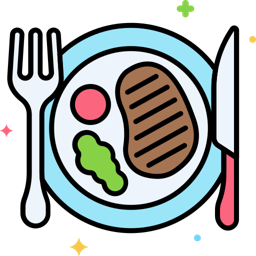

Encontro 04
Decisões no pedido
Vamos revisar as decisões em Python e usar as regras da lanchonete para praticar.
Etapa 3 · As decisõesFundamentos do Python I · Senac Jaraguá do Sul
O que vocês viram com o professor Diego
 Tipos de dados
Tipos de dadosint, float, str e bool inputler uma resposta e converter com
inputler uma resposta e converter com int() ou float() if, elif, elseescolher qual trecho vai rodar
if, elif, elseescolher qual trecho vai rodar and e orcombinar condições
and e orcombinar condiçõesHoje vamos retomar esses exemplos e praticar com pedidos da lanchonete.
Como rodar o código no VS Code e no IDLE
Vocês podem continuar no editor que já usam. O código Python é o mesmo.
 No VS CodeSalvar o arquivo e clicar no botão de executar, no alto à direita. A saída aparece no terminal, embaixo. Digitar ali as respostas do
No VS CodeSalvar o arquivo e clicar no botão de executar, no alto à direita. A saída aparece no terminal, embaixo. Digitar ali as respostas do input. No IDLESalvar o arquivo e apertar F5. A saída aparece na janela do shell. Digitar ali as respostas do
No IDLESalvar o arquivo e apertar F5. A saída aparece na janela do shell. Digitar ali as respostas do input.O programa como um restaurante
 Restaurante (o programa)
Restaurante (o programa)
Cozinhaprepara o pedido Despensaguarda os ingredientes
Despensaguarda os ingredientes
Pratoo resultado
O pedido passou de R$ 100? O cliente tem cupom? É para viagem?
Essas perguntas têm duas respostas. Em Python, usamos True para verdadeiro e False para falso.
Atividade: fechar a conta
Agora vocês vão criar conta.py para calcular a conta da lanchonete. A atividade tem quatro partes.
- Fazer as partes na ordem, cada um no seu arquivo.
- Testar cada parte antes de começar a próxima.
- Chamar o professor se precisar de ajuda.
- Vamos acompanhar até qual parte cada um chegou. Tudo bem se não der tempo de terminar.